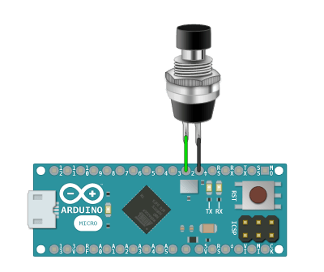

Read and debounce buttons and switches.v1.0.1
See Example Public Methods Release NotesRead and debounce buttons and switches without delay or interrupts. React to button events with the onPressed() and onReleased() commands. Control debounce time with setDebounceTimeout().
This library sets each button up as input_pullup by default, allowing you to wire the button to any digital input and ground. Input_pullup can be disabled by passing an optional flag to the constructor() and wiring the button with your own resistor.

Create a new button and pass in the Arduino pin number. This library will default to input_pullup and invert the button readings to simplify wiring for you. Pass in the second [optional] parameter as false to disable input_pullup.
Pass in an unsigned long value to set the debounce time in milliseconds. Most mechanical buttons will flip between on and off very quickly before settling in the correct state when you switch them. Adjusting the debounce timeout will help remove these extra state-change events.
Returns true while the button is being pressed, or is on. Returns false while the button is not being pressed, or is off.
This method is good for real-time actions that must fire many times during a button press. Use the onPressed() event to fire only one action on each button press.
Returns true while the button is released, or is off. Returns false while the button is being pressed, or is on.
This method is good for real-time actions that must fire many times while the button is not pressed. Use the onReleased() event to fire only one action on each button release.
This will return true only once, after the button has been pressed (and debounced). The button must be released and then pressed again for this method to return true again.
This will return true only once, after the button has been released (and debounced). The button must be pressed and then released again for this method to return true again.
Set the button as INPUT_PULLUP and invert the button state readings (to give you the correct value). This allows you to wire the button to a digital pin and ground while using the internal resistor to protect the Arduino pin.
This method is called by default in the constructor() if you leave out the [optional] input_pullup flag. This method is provided for convenience only.
Set the button as INPUT and set the button state readings back to normal (not inverted). This is the opposite of calling inputPullup().
The best way to disable input_pullup with this library is to call the constructor() with a false [input_pullup] flag instead of using this method. This method is provided for convenience only.
Flip the value of the raw button state reading so when the button is HIGH, it registers as LOW, and vice versa. This is used when the button is set as input_pullup (by default), because the button is normally HIGH when off, and LOW when on, so flipping the readings gives the correct state of the button.
This method is automatically called when using this library as input_pullup, which is the default behavior. This method is provided for convenience only.
Return the button state reading back to normal. This is the opposite of calling invertReading().
This method is called by default when using disableInputPullup(), or when providing a false [input_pullup] flag in the constructor(). This method is provided for convenience only.
Check your downloads folder and double-click the  Button.zip file.
Button.zip file.
Move the un-zipped contents of the  Button folder to the Arduino
Button folder to the Arduino  libraries folder:
libraries folder:


Upgrade to Arduino IDE v1.5 or greater and load the Example Sketch to get started.